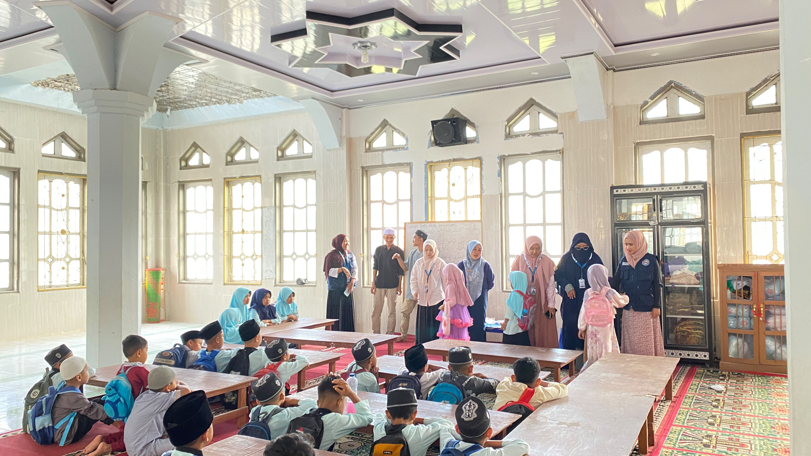
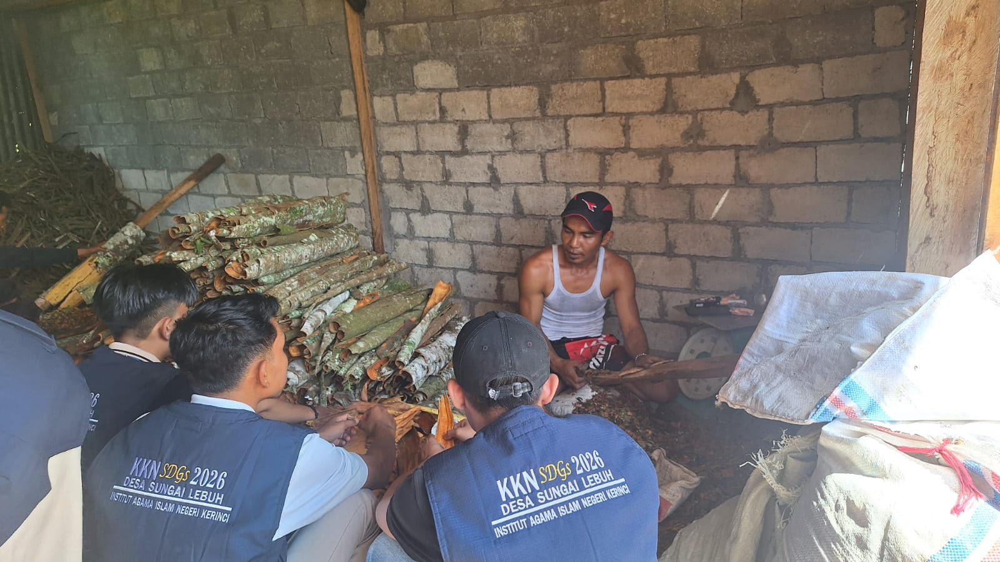
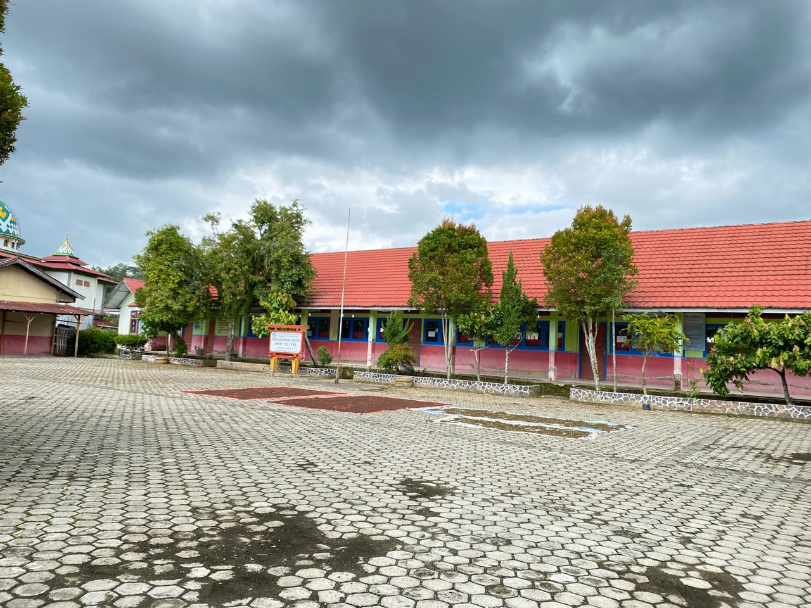
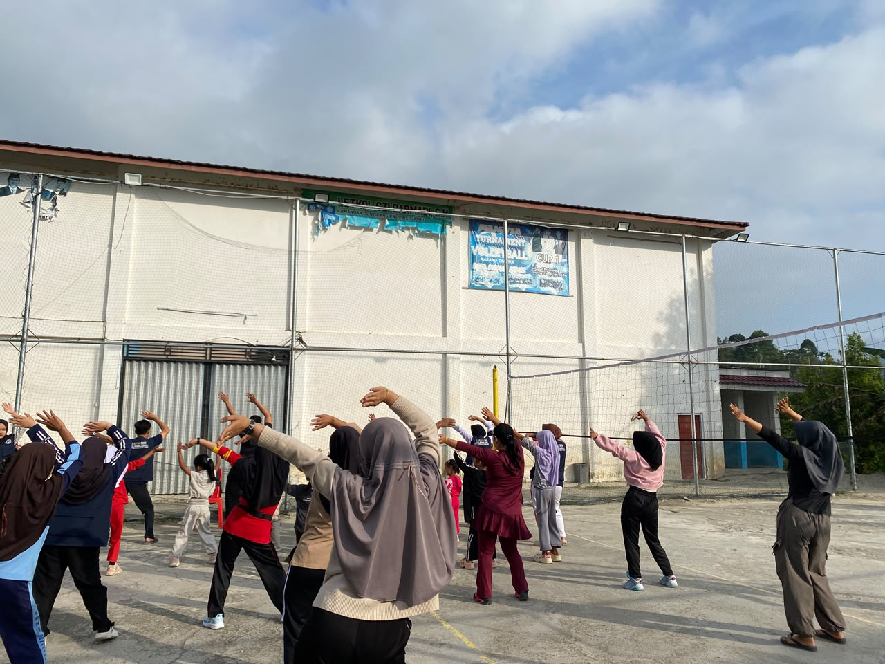
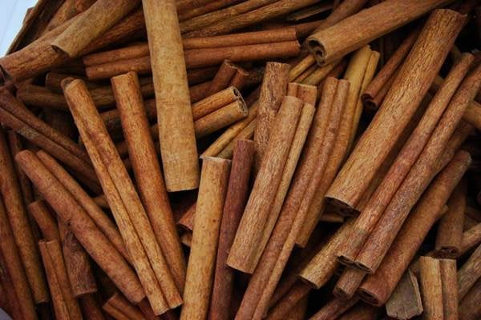
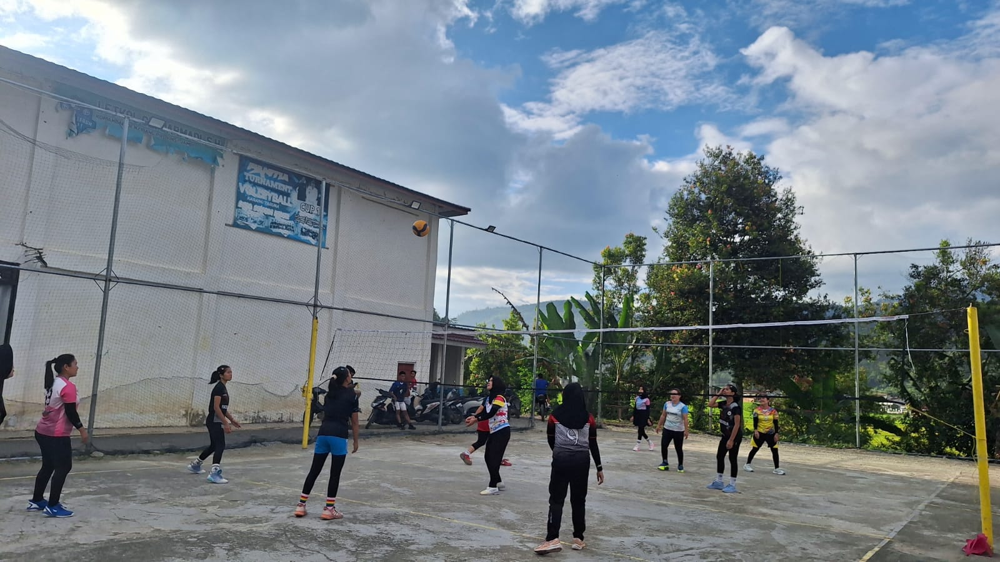
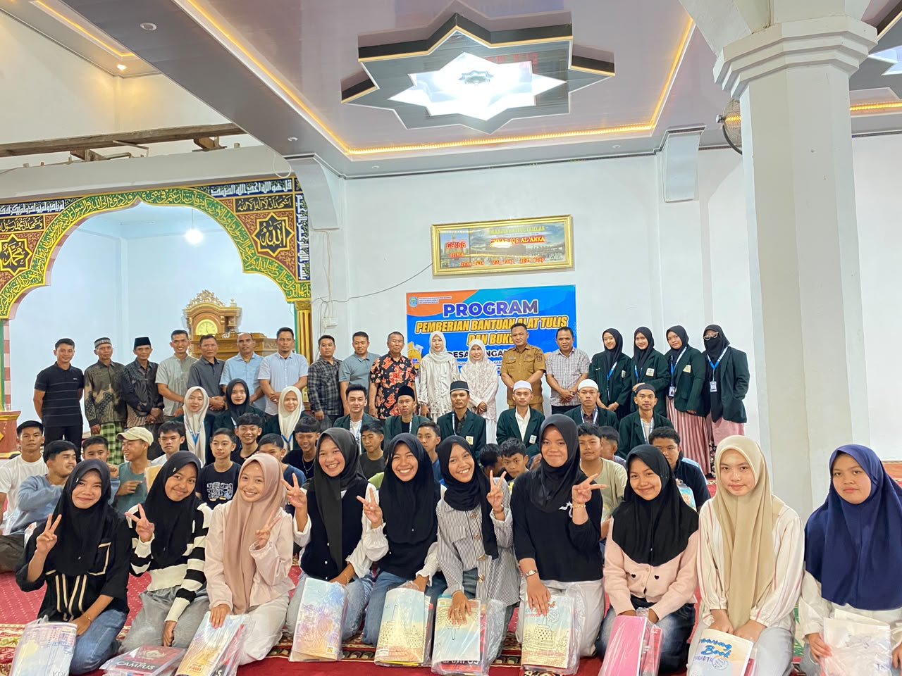
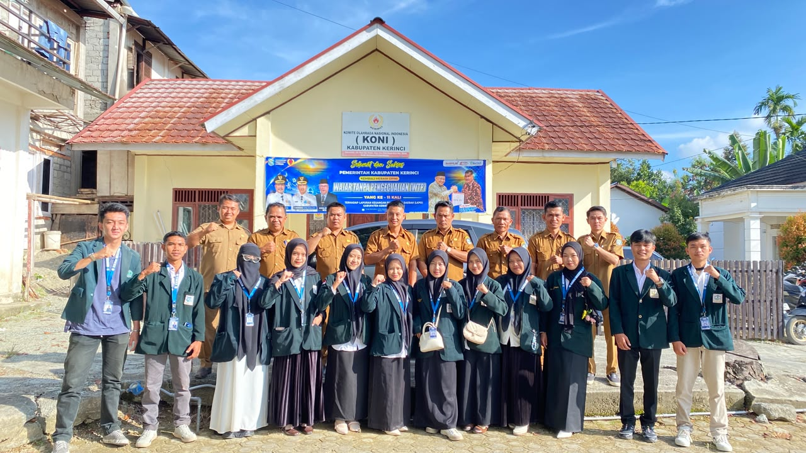
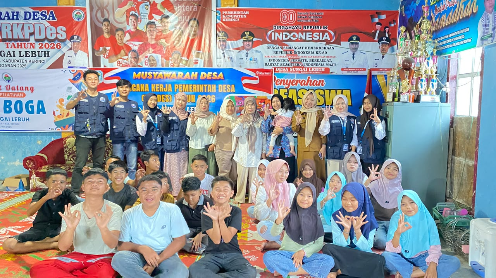

Desa ini secara administratif bersebelahan dengan Desa Pelak Gedang Mekar dan menjadi salah satu wilayah yang berada di kawasan dataran tinggi dengan curahan air dan kondisi alam khas Kerinci.
Desa Sungai Lebuh tumbuh dari kebiasaan warganya berladang kayu manis di lereng-lereng perbukitan sekitar aliran sungai. Selama bertahun-tahun, kulit kayu manis dari desa ini dikenal punya kualitas yang diminati hingga ke luar daerah. Selain menjadi mata pencaharian utama, kebun kayu manis juga menjaga kelestarian tanah dan air di sekitar desa.
Setiap batang kayu manis melalui proses panjang sebelum siap dikirim — dijaga kualitasnya di setiap tahap oleh petani desa.
Bibit kayu manis ditanam di lahan yang subur dengan ketinggian yang sesuai. Pohon dipekihara secara rutin hingga berumur sekita 8-15 tahun sebelum siap dipanen.
Pohon yang telah cukup umur ditebang atau dipangkas, kemudian kulit batang dikupas dengan hati hati. Kulit bagian luar dibersihkan sehingga tersisa kulit dalam yang menjadi bahan utama kayu manis.
Kulit kayu manis dijemur dibawah sinar matahari selama beberapa hari hingga kering. Selama proses pengeringan, kulit akan menggulung secara alami membentuk quill atau gulungan khas kayu manis.
Kayu manis yang telah kering dipilah berdasarkan kualitas, ketebalan, panjang, warna, kebersihan, dan aroma. Proses ini bertujuan untuk mendapatkan mutu yang seragam.
Kayu manis yang telah sortasi dikemas dengan baik agar kualitas tetap terjaga. `Selanjutnya produk dipasarkan kepada pengepul industri pengolahan, pasar lokal, hingga pasar ekspor.







Mahasiswa Kuliah Kerja Nyata (KKN) melaksanakan kegiatan perkenalan kepada masyarakat sebagai awal menjalin silaturahmi dan kerja sama di Desa Sungai Lebuh. Kegiatan ini dihadiri oleh pemerintah desa, tokoh masyarakat, dan warga setempat, sekaligus menjadi kesempatan bagi mahasiswa untuk memperkenalkan diri serta menyampaikan program kerja yang akan dilaksanakan. Diharapkan melalui kegiatan ini terjalin hubungan yang baik sehingga seluruh program KKN dapat berjalan lancar dan memberikan manfaat bagi masyarakat desa.

Mahasiswa Kuliah Kerja Nyata (KKN) mengikuti kegiatan apel gabungan yang diselenggarakan di Kantor Camat Kecamatan Siulak bersama jajaran pemerintah kecamatan. Kegiatan ini menjadi ajang silaturahmi sekaligus bentuk koordinasi antara mahasiswa KKN dengan pemerintah daerah dalam mendukung pelaksanaan program kerja di desa. Melalui apel gabungan ini, diharapkan terjalin sinergi yang baik antara mahasiswa KKN dan pemerintah kecamatan demi kelancaran pengabdian kepada masyarakat.

Mahasiswa Kuliah Kerja Nyata (KKN) bersama Pemerintah Desa Sungai Lebuh mengadakan kegiatan sosialisasi dan edukasi yang melibatkan anak-anak serta remaja desa. Kegiatan berlangsung dengan penuh semangat dan antusias, ditandai dengan sesi penyampaian materi, diskusi, serta foto bersama sebagai bentuk kebersamaan. Melalui kegiatan ini, diharapkan dapat meningkatkan pengetahuan, mempererat hubungan antara mahasiswa KKN dan masyarakat, serta mendorong partisipasi generasi muda dalam kegiatan yang bermanfaat bagi desa.